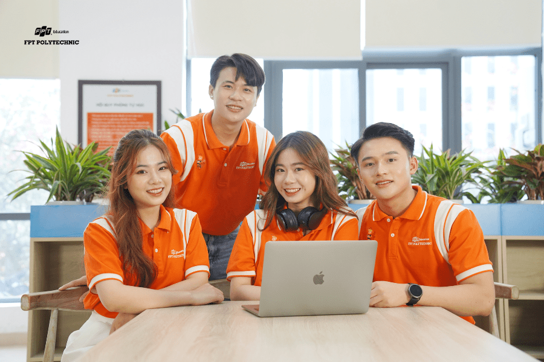
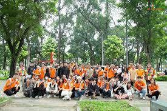
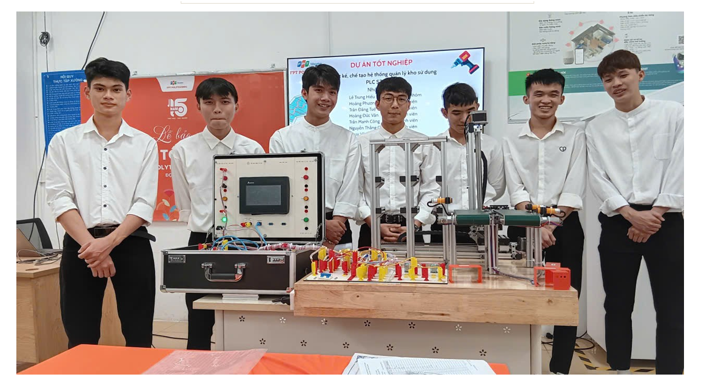

 FPT Polytechnic hân hạnh chào đón các bạn đến với môn học xây dựng trang web. Kết thúc môn học này bạn có thể tự tay xây dựng cho mình một website tinh dựa trên kiến thức HTML và CSS.
 Sinh viên FPT Polytechnic thường xuyên tham gia các hoạt động ngoại khóa bổ ích, giúp rèn luyện kỹ năng mềm, nâng cao tinh thần làm việc nhóm và gắn kết cộng đồng sinh viên.
Nhiều doanh nghiệp đối tác của FPT Polytechnic thường xuyên tổ chức ngày hội tuyển dụng, mở ra cơ hội việc làm hấp dẫn cho sinh viên ngay khi còn đang ngồi trên ghế nhà trường.
 Sinh viên ngành CNTT của FPT Polytechnic đã đạt nhiều giải thưởng trong các cuộc thi công nghệ, thể hiện tinh thần sáng tạo và khả năng ứng dụng kiến thức vào thực tế.